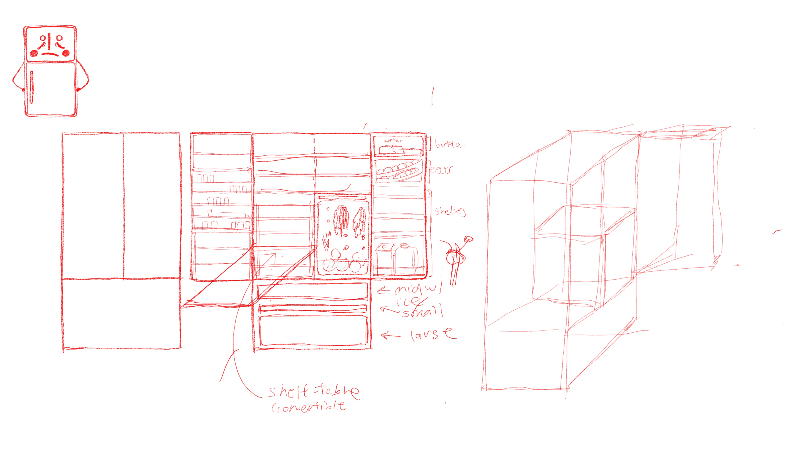
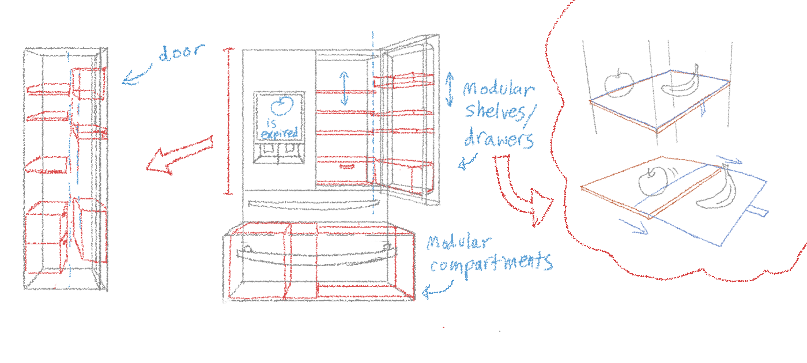
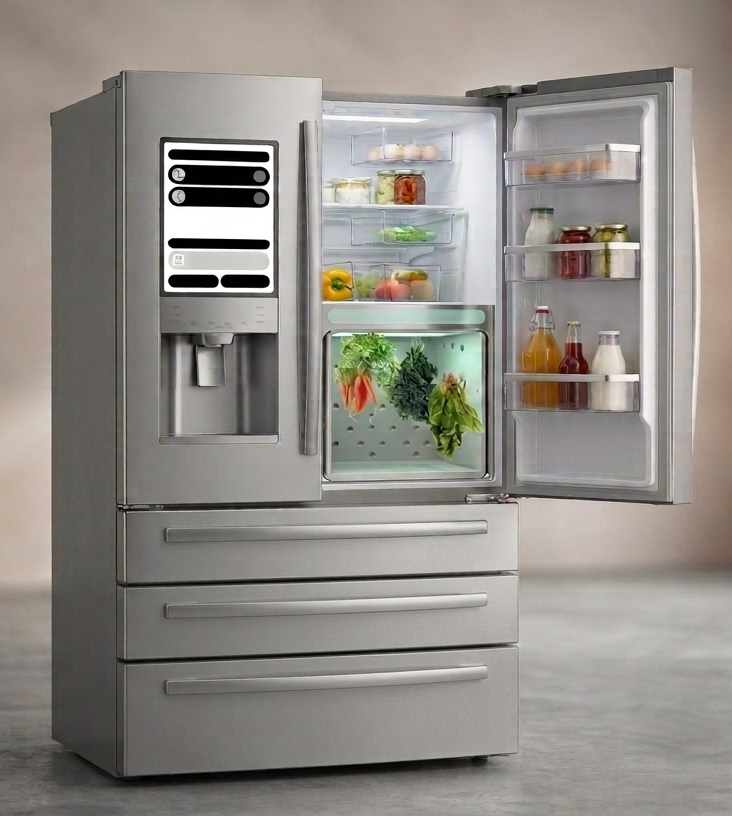

ORIGINAL PROBLEM
We first set out to solve the problem of home meal preparation. At the end of a long day of work or school, the task of cooking suddenly turns into an incredibly daunting, time-consuming obstacle to overcome. What could be rethought, redesigned, and rebuilt to improve such a familiar chore?

USER RESEARCH
We decided to narrow our focus around busy young adults living in city apartments with limited kitchen space, a demographic we have more access to. We interviewed three participants, all living in New York City with roommates.
Problems
- Grocery shopping mental load
- Cleaning pots
- Chopping produce
- Forgetting items in the fridge that go bad and cause waste
- Unsure how to use leftovers
- Limited kitchen and counter space
RETHOUGHT APPROACH
The problem that seemed to stand out to us the most was ingredient mental load and forgotten items in the fridge. We decided to tackle the fridge.
HOW MIGHT WE REDESIGN THE FRIDGE TO MITIGATE VISIBILITY ISSUES DUE TO THE DEPTH AND HEIGHT OF THE SHELVES?
FRIDGE ITERATIONS


FINAL PRODUCT

User must take out the egg carton each time they want eggs, and might stack things on top of it, making it inconvenient to get eggs.
An egg dispenser.
The depth of the fridge means the user can't see many items in the back.
The door has larger compartments to distribute items more evenly across the door and body (like a layered fridge), and shelves slide out to access items in the back.
Produce goes bad fast because it lays on top of other items and is exposed to other ingredients.
A hanging compartment for fresh produce storage, which also helps the user easily remember what produce is fresh and must be used soon.
Certain items are too tall to fit between shelves.
Shelves with adjustable height.
Items below eye level are more easily forgotten.
Cabinets that can be viewed from the top and drawn out, instead of shelves.
Users can't keep track of what produce will expire soon.
A smart scanner, a screen on the fridge, and a phone app that alerts the user when produce is about to expire.